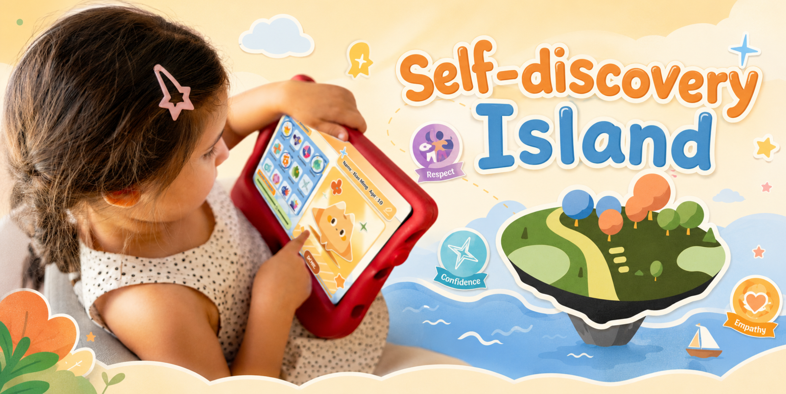
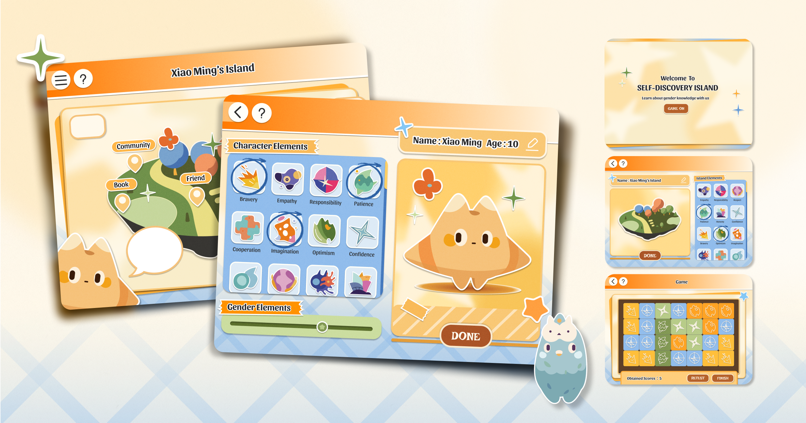
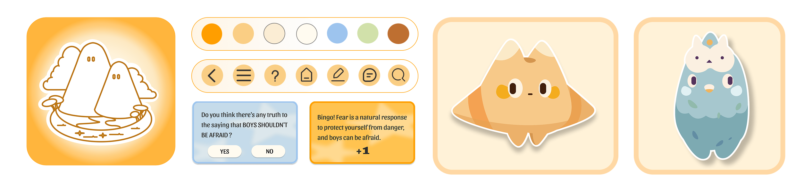
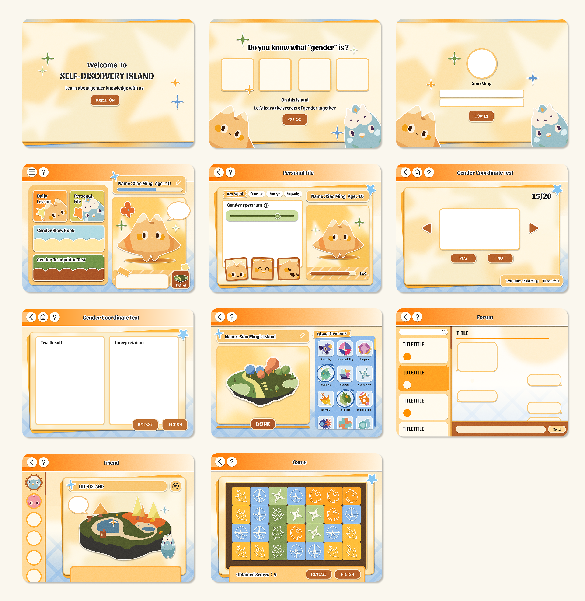
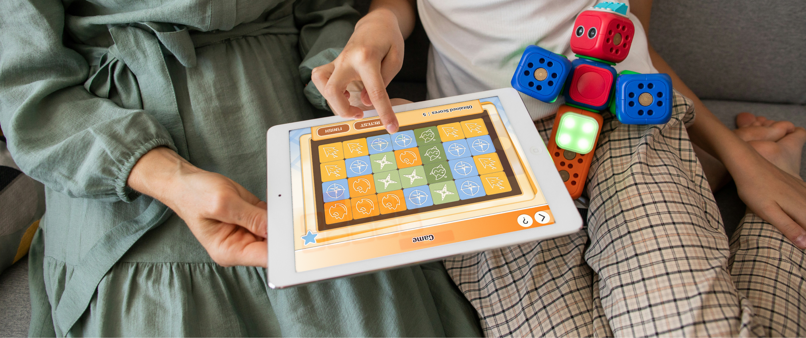

← 返回所有作品

PROJECT OVERVIEW / 项目概览
Self-discovery Island
项目以“自我探索”为核心，将性别认知、角色成长与游戏化体验结合。玩家从一个没有预设性别的空白角色开始，通过选择外观、性格与岛屿元素逐步创造属于自己的角色。角色会伴随游戏过程成长，并通过互动、知识学习与情境体验，引导儿童认识性别差异、理解多元身份，并形成更加开放和包容的性别认知。
项目希望以轻松、童趣的方式降低儿童理解性别议题的门槛，让性别教育不再只是单向的知识灌输，而成为一个可以主动探索、表达和思考的过程。
个人负责内容
独立完成前期研究、用户访谈、竞品分析、用户画像与旅程梳理，并负责产品概念、游戏机制、功能架构、Wireframe、视觉规范及最终 UI 设计，完成从问题研究到产品界面落地的完整设计流程。



